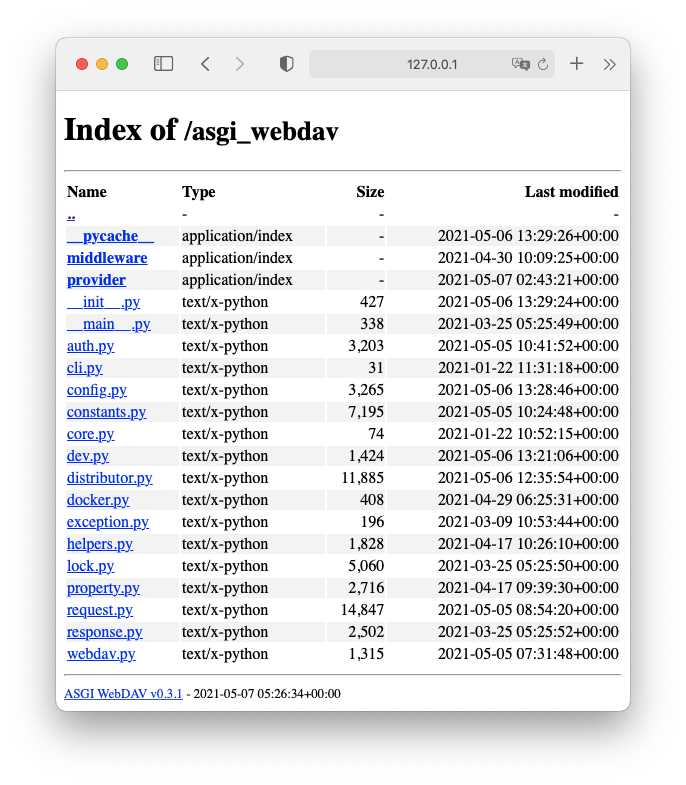

Introduction


An asynchronous WebDAV server implementation, Support multi-provider, multi-account and permission control.
Features
- ASGI standard
- WebDAV standard: RFC4918
- Support multi-provider: FileProvider, MemoryProvider
- Support multi-account and permission control
- Support Optional home directory
- Full asyncio file IO
- Passed all litmus(0.13) test, except 2 warning.
- Browse the file directory in the browser
- Support HTTP Basic/Digest authentication
- Support response in Gzip/Brotli
- Compatible with macOS finder(test in WebDAVFS/3.0.0)
- Compatible with Window10 Explorer(Microsoft-WebDAV-MiniRedir/10.0.19043)
Quickstart
Install to docker
docker pull ray1ex/asgi-webdav:latest
Run it
docker run --restart always -p 0.0.0.0:80:80 -v /your/path:/data \
--name asgi-webdav ray1ex/asgi-webdav
WARNING: load config value from file[/data/webdav.json] failed, [Errno 2] No such file or directory: '/data/webdav.json'
INFO: [asgi_webdav.webdav] ASGI WebDAV(v0.3.1) starting...
INFO: [asgi_webdav.distributor] Mapping Prefix: / => file:///data
INFO: [asgi_webdav.auth] Register Account: username, allow:[''], deny:[]
INFO: [uvicorn] Started server process [7]
INFO: [uvicorn] Uvicorn running on http://0.0.0.0:80 (Press CTRL+C to quit)
Default account
username, password, ["+"]
View in browser

Last update: 2021-07-03